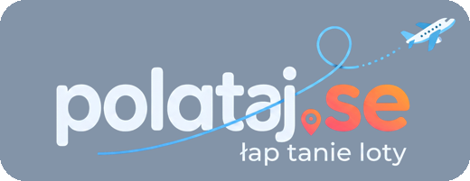

tanie loty z Twojego lotniska
Telegram
Facebook
Alerty z moich miast
Warszawa — WAW·WMI·RDO
Kraków — KRK
Gdańsk — GDN
Poznań — POZ
Wrocław — WRO
Katowice — KTW
Wybierz lotnisko wylotu
Najpopularniejsze wyloty
Warszawa
Kraków
Gdańsk
Poznań
Wrocław
Katowice
·
Wszystkie trasy
·
Prywatność
·
Kontakt